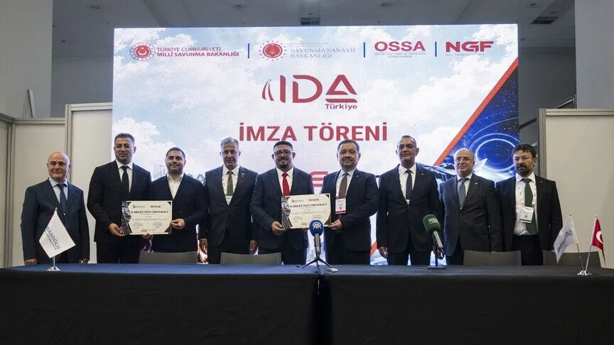

Israeli settlers set fire to mosque in occupied West Bank
Israel’s military said that soldiers were dispatched to Mikhmas following a report of graffiti and arson at the mosque, as well as damage to a vehicle
يُرِيدُونَ لِيُطْفِـُٔوا۟ نُورَ ٱللَّهِ بِأَفْوَٰهِهِمْ وَٱللَّهُ مُتِمُّ نُورِهِۦ وَلَوْ كَرِهَ ٱلْكَٰفِرُونَ
Ağızlarıyla Allah'ın nurunu söndürmek isterler. İnkarcılar ne kadar istemeseler de, Allah nurunu, dinini tamamlayacaktır.
Kur'ân-ı Kerîm · As-Saff 61:8Son 30 günde 9 bölge ve 18 bölümde, 6,997 kaynaktan 49,731 haber.

Israel’s military said that soldiers were dispatched to Mikhmas following a report of graffiti and arson at the mosque, as well as damage to a vehicle

Iran-backed Houthis strike Saudi oil company Aramco’s headquarters, officials say AP News

Canada and Singapore are among the countries that remain committed to strengthening trade ties with China, despite growing global fragmentation and a push by governments towards greater self-sufficiency, officials from both countries said on Wednesday at an economic forum in New

Exclusive: Israel has not permitted US-led project to house 150 international troops to move forward Israel is refusing to allow a key military outpost project for Donald Trump’s Board of Peace to proceed in Gaza, the Guardian has learned. In early August, the Board of Peace, the

At Turkish-Japanese Science and Technology University, about 100 Turkish students will study artificial intelligence, earthquakes and other fields.

Yemen's Houthis denied carrying out an attack on Saudi Arabia on Thursday, shortly after Riyadh said it had intercepted a missile targeting the region around the holy city of Medina.
However, a recent industry raised concerns about the underfunding of photonic and quantum industries in New Zealand, which is growing at a lower rate than the global average.
Aişe r.anha'dan rivayete göre "Nebi Sallallahu Aleyhi ve Sellem bir sefere çıkmak istediği takdirde hanımları arasında kura çekerdi. (Bir keresinde) kura Aişe ile Hafsa'ya çıktı. Nebi Sallallahu Aleyhi ve Sellem gece oldu mu Aişe ile birlikte yol alır ve konuşurdu. Hafsa bunun üzerine: Bu gece sen benim deveme binsen, ben de senin devene binsem. Sen ne olacağına baksan, ben de ne olacağına baksam olmaz mı, dedi. Aişe: Olur deyince (onun) devesine bindi. Nebi Sallallahu Aleyhi ve Sellem, Hafsa'nın üzerine binmiş olduğu Aişe'nin devesinin yanına geldi. Ona selam verdi, daha sonra yola devam etti. Nihayet konakladılar.' Aişe, Nebi Sallallahu Aleyhi ve Sellem'i yanında bulmamıştı. Bu sebeple konakladıkları vakit ayaklarını izhir otları arasına uzattı ve bu arada: Rabbim, üzerime beni sokacak bir akrep yahut bir yılan gönder de ona hiçbir şey söyleyemeyeyim diye dua ediyordu." Fethu'l-Bari Açıklaması: "Sefere çıkmak istediği takdirde" Başlıktan anlaşıldığına göre kura çekmek, özelolarak yolculuk hali ile ilgilidir, genel değildir. Kuranın amacı, kendisi ile yolculuk yapılacak olan kadının tayin edilmesidir. Erkek, kurayı hanımları arasında bir paylaştırma yapmayı istediği vakit de uygular. Dolayısıyla o kadınlardan istediğinden başlayamaz. Aksine aralarında kura çeker ve kimin kurası çıkarsa onunla başlar. Herhangi bir suretle razı edilmeleri hali müstesnadır, o vakit, kurasız da caiz olur. "Hanımları arasında kura çekerdi." İbn Sa'd bir başka yoldan, el-Kasım'dan; o da Aişe'den diye naklettiği rivayetinde şu fazlalık da vardır: "Kura benden başkasına çıkacak olursa hoşlanmadığı anlaşılırdı." Bu hadis ortaklar arasında ortak olan malın paylaştırılması ve daha başka hususlarda kura çekilmesinin meşruiyetine delil gösterilmiştir. Daha önce Şehadat (şahadetler) bahsinin sonlarında geçtiği gibi. .. Hanefilerle, Malikilerin meşhur olan görüşü ise kuranın muteber olmadığıdır. Iyad dedi ki: Malik ve onun mezhebine mensup arkadaşlarından meşhur olarak nakledilen görüş budur. Çünkü bu bir çeşit piyango ve kumar türündendir. Hanefilerden ise bunun caiz olduğu nakledilmiştir. Malikilerden kurayı kabul etmeyenler, kimi kadınların yolculukta diğerlerine göre daha faydalı olabileceğini delil göstermişlerdir. Dolayısıyla yolculukta faydası olmayan kimsenin kurası çıkacak olursa bu da erkeğin haline zararlı olur. "Kura Aişe ile Hafsa'ya Çıktı." Maksat çıkılan seferlerden birisidir. "Ona selam verdi." Rivayette onunla konuştuğu sözkonusu edilmemektedir. Olan bitenin ona ilham yoluyla bildirilmiş olması muhtemelolduğu gibi, bunun böyle denk düşmüş olma ihtimali de vardır, onunlevkonuşmuş olmakla birlikte - bunun ayrıca nakledilmemiş olması ihtimali de vardır. "Aişe, Nebii" yolda gittikleri esnada "kaybetmişti." Çünkü alışılmışın yitirilmesi insana zor gelir. "Konakladıkları vakit Aişe ayaklarını izhirin arasına attı." Anlaşıldığı kadarıyla Hafsa'nın teklifini kabul ederek böyle bir cinayeti işleyenin kendisi olduğunu bildiğinden, bunu yaptığı için kendisine sitemde bulunmuştur. İzhir, çölde çoğunlukla zararlı haşeratın bulunduğu, bilinen bir ottur
Sahih al-Bukhari 5211Fazilet Takvimi publishes no feed or API, so this comes from an open dataset of the classical collections. Check the reference against sunnah.com.

Jack Bostock scores a hat-trick of tries as Australia fight back to win the opening game of the Rugby League World Cup against New Zealand.
Cristiano Ronaldo (C) of Al-Nassr is seen ahead of the Saudi Pro League (SPL) match between Al Nassr and Al Draih at the King Saud University Stadium in Riyadh, Saudi Arabia on October 9, 2026. [Mohammed Saad – Anadolu Agency] " data-large-file="https://i0.wp.com/www.middle

The ease in which England saw off Greece in round one of the Women's World Cup qualifying play-offs showed just how inefficient the structure currently is.

Almost half of women’s footballers are considering leaving the game early, with financial pressures and mental health struggles the main reasons, according to a Fifpro report highlighting the gulf between the sport’s rapid growth and conditions for most players. The 2026 Fifpro G

Chip makers and tech investors such as Samsung and SoftBank plunge as potential interest rate hikes spook markets Business news – live updates Larry Elliott: the global economy is muddling through. But a storm is coming An accelerating sell-off of AI-linked shares has hit global

India is expected to become the world’s fourth-largest economy by 2027, overtaking Japan, according to International Monetary Fund (IMF) projections that on Thursday laid out the Asian nations’ contrasting trajectories. The IMF said Japan would remain the fourth-largest country b

Deficit projected to exceed $112B, more than seven times its 2019 level, German Economic Institute says
New US Indictment Charges Maduro With Overseeing Machine of Repression, Torture of Americans PBS

The festival included costume competitions featuring anime, manga and video game characters, as well as sushi-eating contests.

For anyone who has visited the Chinese galleries at the Metropolitan Museum of Art in New York, there is one work that stops them in their tracks. Stepping into Gallery 206, home to Chinese Buddhist art, visitors are met by a monumental wall – over 15 metres wide and 7.5 metres t

Imagine a singer with a name, a face and a date of birth. Fans follow them, watch their performances and wait for their next release. But when the concert ends, there is no backsta...

China’s ruling Communist Party is marking 90 years since the end of the Long March with exhibitions, tours, film and television productions as it tries to mobilise the nation to contribute to its vision for the future. Ahead of the October 22 anniversary, commemorative activities
Iran-backed Houthis strike Saudi oil company Aramco’s headquarters, officials say AP News

One customer waited months for her solar installation only for the company to be placed in liquidation, with the loss of her $13k deposit.
Ex-Venezuelan President Nicolás Maduro is returning to federal court to face torture allegations Audacy
Federal prosecutors charge Venezuelan man shot by ICE agent in Texas with assaulting an officer KSAT
Outflows from investment funds caught up in last month's turmoil have not significantly weakened Turkish residents' preference for lira-denominated assets, the chief of the country...
Baker Hughes Signs Two Agreements to Develop Venezuela's Natural Gas and Energy Infrastructure energynews.pro
Maduro regime ally arrested in alleged $2B bribery, money laundering schemes KVII
bp to Advance Venezuela Gas Opportunities at Venezuela Energy Week 2027 Lohud
Canada and Singapore are among the countries that remain committed to strengthening trade ties with China, despite growing global fragmentation and a push by governments towards greater self-sufficiency, officials from both countries said on Wednesday at an economic forum in New
Former Colombian President Petro broke diplomatic relations with Israel in 2024 over its actions in Gaza, had heavily criticised PM Benjamin Netanyahu

The Treasury removes the brother of the interim president, Delcy Rodríguez, from the Specially Designated Nationals list
The Houthis say they have been retaliating for the kingdom’s backing of Yemeni government forces in the Yemen war that restarted last month

Donald Trump says that preparations are underway to launch a "massive" oil, gas and mineral exploration in Greenland.

Turkey's Green Taxonomy Regulation came into force ahead of COP31. The inclusion of nuclear energy, fossil gas, and carbon-intensive manufacturing sectors in the Taxonomy drew criticism. Experts assessed the regulation for bianet.

Price-gouging checks at petrol stations and electric vehicle grants for French taxi drivers among Continent’s responses to global energy shock
A top Turkish official highlighted on Wednesday the importance of resource diversification against global energy challenges and uncertainty, suggesting that energy security is a fu...

Stelco has days to share a plan to save hundreds of Ontario steel workers from layoffs already underway — or it risks legal action from the Canadian government. The clock is ticking on what lawyers say is a test of how foreign investors are held to account as Prime Minister Mark
Higher interest rates on France's government debt are an alarm signal for the country, even though Paris retains bond investors' confidence, the country's finance minister said Wed...

The ruling comes in the case of a Mi'kmaw man with severe mental health challenges who was sentenced in Nova Scotia to five years in prison after pleading guilty to aggravated assault against his partner, a Mi'kmaw woman.

Exclusive: Douglas Alexander, on trade delegation to India, talks up economic benefits of joint trading arrangements with Europe Britain will benefit from much closer trading relations with the EU even if that means giving up its ability to negotiate free trade agreements, the Sc
At Turkish-Japanese Science and Technology University, about 100 Turkish students will study artificial intelligence, earthquakes and other fields.
As Christopher Luxon and Chris Hipkins clashed in the NZ Herald leaders debate, a Newsroom fact check finds they both made false claims The post Fact-checking the leaders’ debate after Luxon and Hipkins said they never lie appeared first on Newsroom .

According to Tokyo Metropolitan Government projections, demand for cremations will begin to outstrip existing capacity in the next decade.

No social network has dipped back to pre-Oct. 7 hate level, Australian Online Hate Prevention Institute says, adding the data refutes claim that legitimate criticism of Israel is mislabeled as Jew-hatred

The arrest comes amid a spike in tensions between Russia and Japan following Putin's August trip to the Kuril Islands, the Moscow-controlled Pacific archipelago that is claimed by both countries

Huang Qifan, former mayor of Chongqing and a survivor of multiple regional graft scandals, is under investigation for corruption, according to state media. State news agency Xinhua reported on Tuesday that the Communist Party’s Central Commission for Discipline Inspection was inv

Prime Minister Sanae Takaichi on Thursday said the details of the accusations against the Hokkaido Shimbun reporter remained unclear.

FSB security agency said reporter was arrested on island of Sakhalin, alleging he was collecting information about Russia’s defences Russia has arrested a Japanese journalist on the far east island of Sakhalin and accused him of spying, in the latest sign of rising tensions betwe

Industry leaders convene in Ankara to emphasize massive growth in Türkiye's defense industry, propose adapting successful domestic sourcing model in defense to accelerate civilian sectors, including healthcare and mass transit manufacturing
In the past few months, agents developed by OpenAI infiltrated systems of the Australian government and several organizations, alarming experts
Under the project, two new plants are set to be built in the state of New York with funding of up to $21 billion.
New Zealand says China is its most persistent state-backed cyber threat Reuters
Yemen's Houthis denied carrying out an attack on Saudi Arabia on Thursday, shortly after Riyadh said it had intercepted a missile targeting the region around the holy city of Medina.
Israeli soldiers take security measures during a raid in Ramallah, West Bank, Palestine, on October 13, 2026. [Stringer – Anadolu Agency] " data-large-file="https://i0.wp.com/www.middleeastmonitor.com/wp-content/uploads/2026/10/AA-20261013-42740768-42740756-ISRAELI_ARMY_RAI
Press freedom groups and opposition parties denounced the move against Halk TV, calling it yet another step by the government to silence opposition voices.

What is Starshield, SpaceX's military version of Starlink? Reuters

The CEO of the American company that owns Hamilton-based steelmaker Stelco says he's prepared to fight the Canadian government in court over Stelco's plan to lay off hundreds of workers. He also said he's open to selling the company and voiced support for U.S. tariffs on Canadian

Before the two monthly declines, Statistics Canada data showed employment trending upward, with 181,000 jobs added between April and July. But losses in August and September snapped that hot streak.

Ottawa is considering a range of legal options against Stelco's American owner after the company rejected the government's demand to halt planned layoffs at the Hamilton steelmaker, Federal Industry Minister Mélanie Joly said Wednesday.

Hamilton-based steelmaker Stelco says it will proceed with hundreds of layoffs, despite threats of legal action from the federal government.
Torrential rain that began Wednesday triggered widespread flooding across Istanbul, killing at least two people, inundating homes and businesses and leaving hundreds stranded overn...
Artificial intelligence has become one of the pressing points in climate talks amid concerns about the growing carbon footprint, mainly stemming from data centers powering the tech...

A grassland fire in Mongolia has raised fresh concerns in China, underscoring the recurring risk of cross-border environmental hazards. This is not the first time an environmental disaster originating in Mongolia has threatened to cross the 4,700km (2,920-mile) border into China,

A China-led international team has reported a new pre-earthquake phenomenon that has shown strong predictive potential for major earthquakes since 2022 with minimal failures. The anomalous seismic, magnetic and ionospheric resonance signals they observed – termed “seismo-ripples”
Exclusive: Israel has not permitted US-led project to house 150 international troops to move forward Israel is refusing to allow a key military outpost project for Donald Trump’s Board of Peace to proceed in Gaza, the Guardian has learned. In early August, the Board of Peace, the

Ola Källenius says it will ‘weaken the industry on both sides’ ahead of act intended to counter non-EU competition Locking the UK out of the EU’s flagship industrial “Made in Europe” legislation would amount to a “deliberate choice” by EU leaders to “hurt” the car industry across
EU military mobility drive could trigger €100bn infrastructure upgrade International Rental News
CHINA'S AUTOMOTIVE PLAYBOOK IS REWRITING GLOBAL COMPETITION, MOBILITY GLOBAL FINDS Morningstar

Foreign Minister Hakan Fidan protested Israeli President Isaac Herzog’s speech in Baku, Azerbaijan, on Thursday by walking out of the venue as Herzog began speaking. Fidan is repre...

The umbrella body for labor unions across the country aims to solidify the trend of wage increases by setting high pay increase targets.

Han Zheng, China’s vice-president, called on “major countries” to respect the sovereignty and security of Middle Eastern nations and bring about a two-state solution for the “Palestinian question” on Saturday at the UN General Assembly (UNGA) in an implicit dig at the US and Isra
Belgium Europe Summit The Herald Journal
Israel’s military said that soldiers were dispatched to Mikhmas following a report of graffiti and arson at the mosque, as well as damage to a vehicle

As membership declines at Great Neck's once-prominent Temple Beth-El, the congregation seeks funds to donate its 50-foot-long sculpture to a museum after more than five decades

During the 81st session of the United Nations General Assembly in New York, the Permanent Observer of the Holy See to the UN addresses the need for disarmament to build peace. In a separate committee, he emphasises the importance of eradicating hunger to tackle the world's greate

The Campaign Against Antisemitism says it is ‘staggering’ that the Irish group are to play close to the Manchester shul where two were killed in the 2025 terror attack
Ant International Obtains Key Licenses From Central Bank Of UAE To Support Digital Payments TradingView
QCB Governor meets Governor of Central Bank of Malaysia, UBS Co-President Global Wealth Management | Gulf Times Gulf Times
Before the Bell: What every Canadian investor needs to know today The Globe and Mail
China's central bank chief urges 'comprehensive' view on global imbalances Reuters